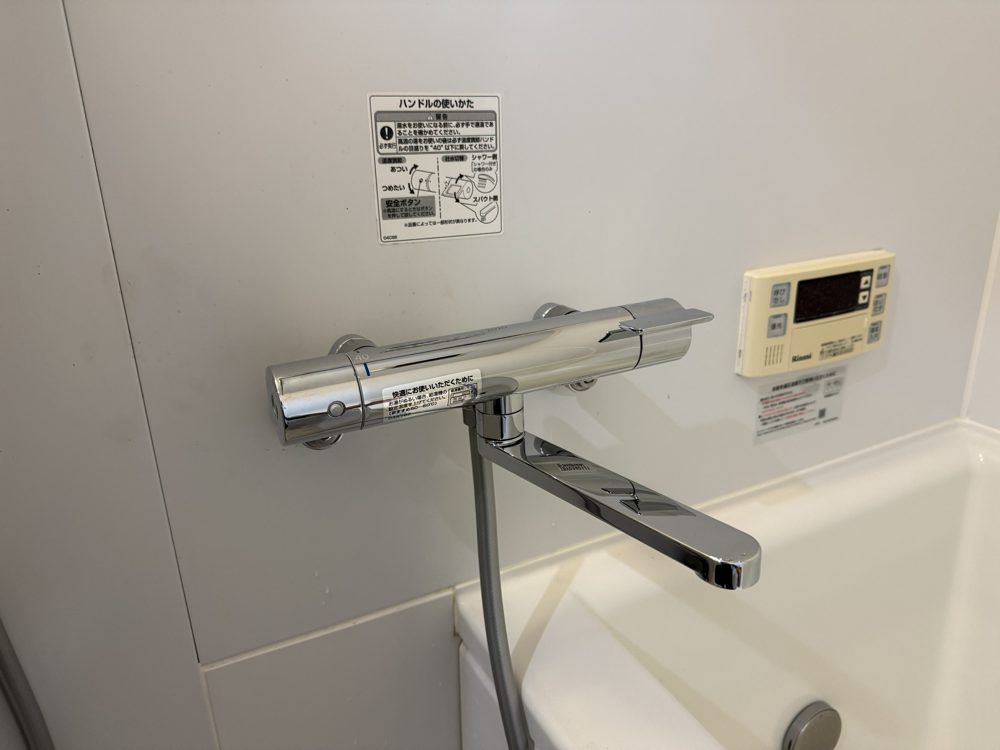

原状回復見積もりを承認する前に、オーナーが確認すること
退去後の見積書を総額だけで判断せず、負担区分、写真根拠、契約書との対応、承認期限を確認するための記事です。
- 入居者負担とオーナー負担を分けたい
- 写真や明細の根拠を確認したい
- 承認前に管理会社へ聞く文面を整えたい
電球・スイッチ・蛇口・家具・住まいの小さな不安から、賃貸管理や原状回復の判断材料まで、近所の有資格者が整理します。写真を送るだけのLINE相談は0円です。
ご相談の入口
目的別に相談する
行徳・妙典・市川市周辺で検索されやすい相談内容ごとに、できること・できないこと・料金目安と関連記事を整理しました。
賃貸オーナー向け
管理会社を変えるか、追加見積もりを認めるかを急ぐ前に、記録・契約範囲・写真根拠・費用承認を落ち着いて整理できるようにしました。
退去後の見積書を総額だけで判断せず、負担区分、写真根拠、契約書との対応、承認期限を確認するための記事です。
入居者対応や修繕手配が止まっている時に、緊急度、費用承認、報告履歴、管理委託契約の範囲を切り分けます。
安さだけで選ばず、写真確認、概算提示、再訪リスク、入居者様への説明の丁寧さを確認するための記事です。
料金目安
まずはLINEで写真を送ってください。内容を確認して、対応可否と概算料金をお伝えします。作業前に金額を確認し、勝手な追加作業はしません。
「お気持ち代」で曖昧にせず、最低目安を先にお伝えします。現地で状況が変わる場合も、追加作業の前に必ず確認します。
できること・できないこと
高齢者、単身者、賃貸住まいの方も、まずは「これ頼んでいい？」という確認からどうぞ。危険な作業や資格範囲外の工事は受けません。
実際の工事実績

浴室 / 水まわり
水栓の仕入れから交換まで、滝沢本人が担当。施工前・施工中・施工後の写真で、作業の流れをご紹介します。
お客様が手配した水栓の交換もご相談いただけます。
3枚の写真で工事実績を見る
所要時間15分／目安3,000円〜

所要時間30分／目安3,000円〜＋部品代

所要時間60分／目安5,000円〜

30分／目安3,000円〜
30分／目安3,000円〜
相談から作業まで
「これ頼んでいい？」だけでも大丈夫です。
スマホ写真、困っている場所、賃貸か持ち家かを確認します。
対応できない内容は、無理に受けず正直に伝えます。
火曜・水曜を中心に、伺える範囲で調整します。
勝手な追加作業はしません。
安心材料
優しく話しやすいだけでなく、対応できること・できないことをはっきり伝えます。無理な営業や勝手な追加作業はしません。
対応エリア
市川市の行徳・妙典周辺を中心に対応します。周辺地域も内容と日程によって相談可能です。まずはLINEで写真と地域名を送ってください。
迷ったらここから
写真1枚でも、文章だけでも大丈夫です。対応できる内容か、専門業者へ頼むべきかを整理します。
よくある質問
大丈夫です。LINEで写真を送っていただく相談は0円です。対応できる内容か、専門業者へ頼むべき内容かを整理します。
LINE写真相談は0円、近所の現地確認は2,000円〜3,000円、30分以内の小作業は3,000円〜、1時間以内の作業は5,000円〜が目安です。
賃貸でも相談できます。管理会社や大家さんへ確認した方がよい内容も含めて、無理に作業せず整理します。
賃貸管理会社の対応遅れや原状回復見積もりの確認など、専門家に相談する前の資料整理と質問づくりをお手伝いします。
訪問は火曜・水曜を中心にしていますが、LINEや電話での事前相談は可能です。日程は内容を確認して調整します。
はい。家に上がる仕事だからこそ、事前に内容・料金・対応範囲を明確にします。不安な点は事前に遠慮なくお伝えください。
部品代は実費です。必要な部品がある場合は、購入前または作業前に金額を確認します。
資格範囲外の電気工事、危険な高所作業、大規模な水道工事、緊急漏水、壁や床を壊す工事、法的・税務判断などは対応できません。
訪問前のキャンセル料は原則いただきません。現地到着後や部品手配後のキャンセルは、実費が発生する場合があります。
お問い合わせ
「蛇口から少し水が出る」「スイッチが不安」「原状回復見積もりを見てほしい」など、短い文章で大丈夫です。お名前、ご相談内容、お住まいの地域を送ってください。